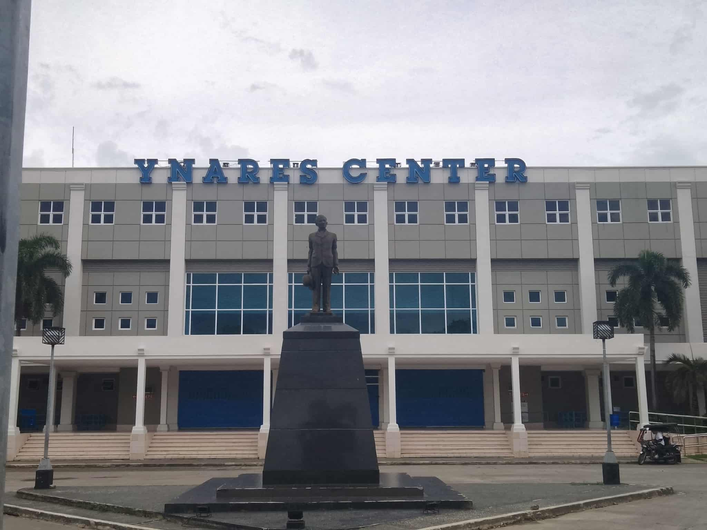
Ynares Center Antipolo
📍 View LocationDescription
The Ynares Center is a multipurpose indoor arena located in Antipolo City, Rizal, Philippines. Opened in 2000, it was built at a cost of around ₱350 million and is owned and operated by the Rizal Provincial Government. Named after the influential Ynares political family, who have held key government positions in Rizal, the center serves as a hub for various events including sports tournaments, concerts, religious gatherings, and official provincial functions. With a seating capacity of approximately 7,400 and situated on a 50,000-square-meter lot, the Ynares Center also houses multiple function rooms, government offices, and parking for over 400 vehicles. Over the years, it has hosted Philippine Basketball Association (PBA) games, collegiate tournaments, boxing matches, and large-scale public celebrations, making it a landmark venue and cultural centerpiece in the province of Rizal. The Ynares Center becomes a popular tourist spot during the "Ber" months (September to December) mainly because it serves as a central venue for holiday celebrations, cultural events, and large-scale gatherings in Antipolo and the province of Rizal.During this season, several key factors attract both locals and tourists
1. Christmas Events and Decorations
The Rizal Provincial Government often organizes Christmas lighting ceremonies, parades, concerts, and themed decorations around the Ynares Center, transforming it into a festive destination for families and visitors.2. Cultural and Religious
Activities-Since Antipolo is known for its religious heritage, events like Simbang Gabi (night masses), Marian processions, and other traditional celebrations may be held in or around the center during the lead-up to Christmas.3. Local Fairs And Bazaars
Temporary bazaars, food stalls, trade fairs, and handicraft expos often pop up around the Ynares Center during the holidays, offering unique products and local delicacies perfect for gift-giving and pasalubong (souvenirs).4. Concerts and Public
Performances– Big concerts, celebrity shows, and performances by local artists are frequently held at the arena during the festive season, drawing crowds from neighboring cities and provinces. In short, the Ynares Center becomes a holiday hotspot not just because of its size, but because it brings together community spirit, culture, entertainment, and tradition especially alive and vibrant during the "Ber" months.5. Motorcycle event
Motorcycle events such as races, motorcycle shows are sometimes held in the parking lot or area of the Ynares Center and on May 25 - September 21, 2025 there was also a motorcycle racing event and on August 12, a motorshow was also held.Gallery
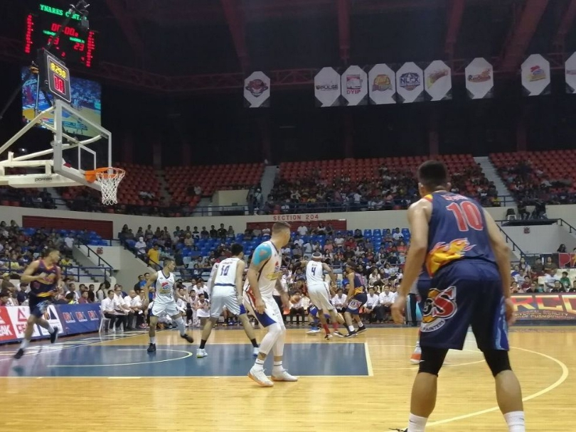
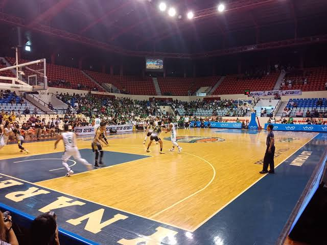
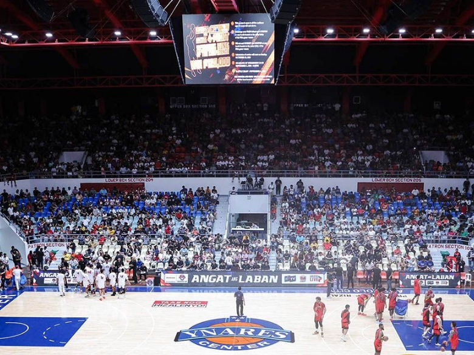
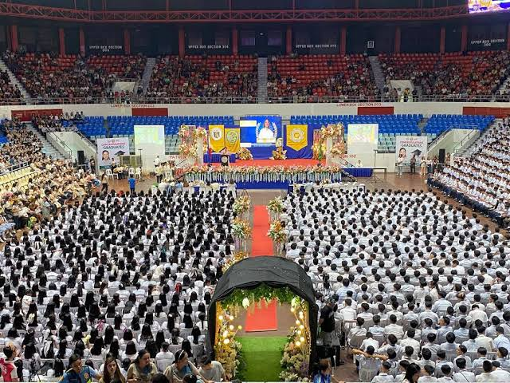
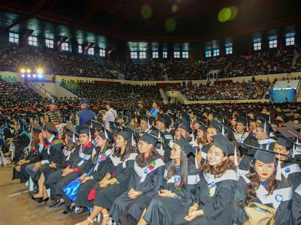
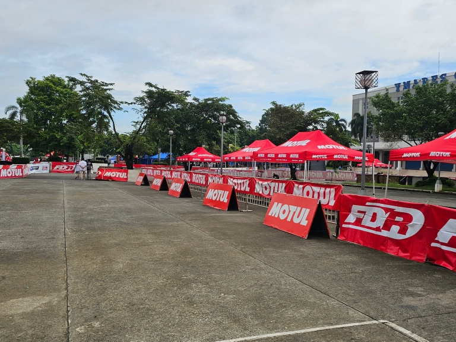
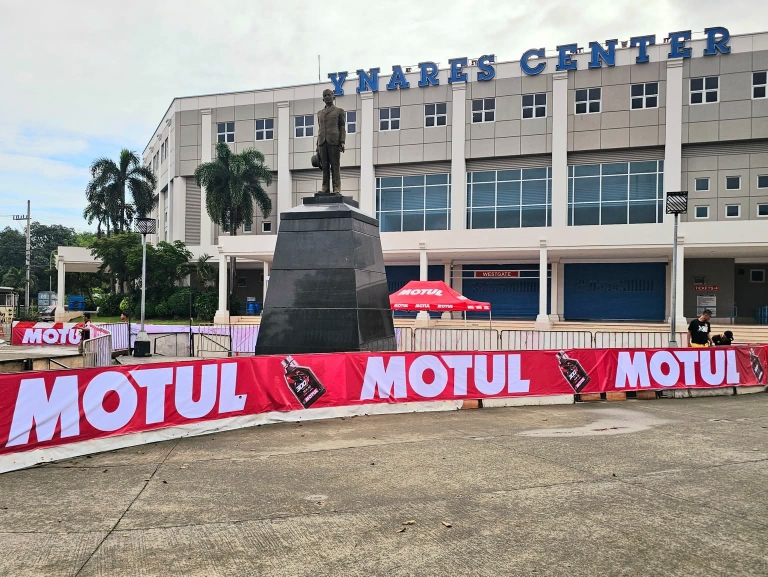
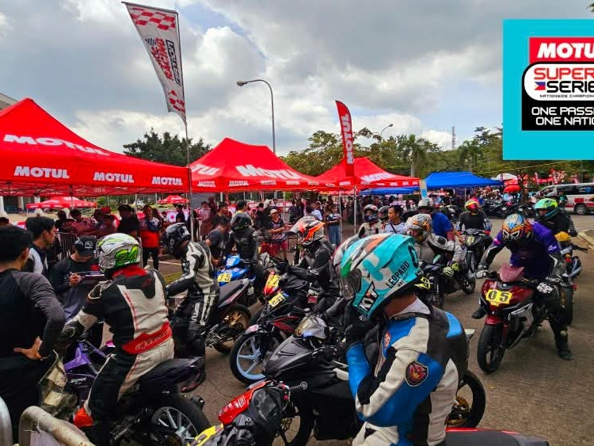
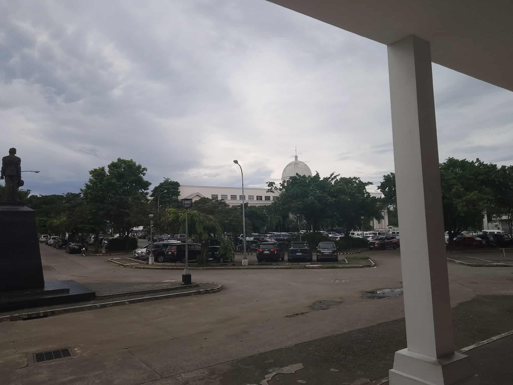
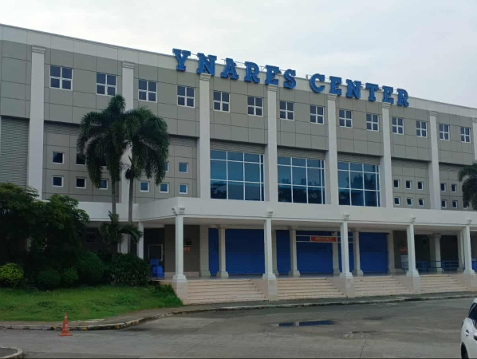
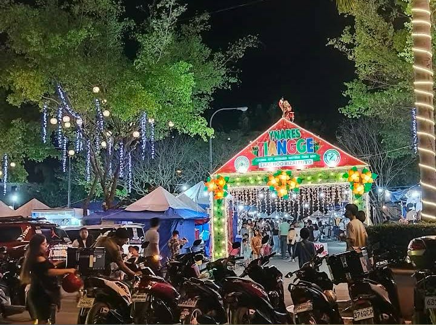
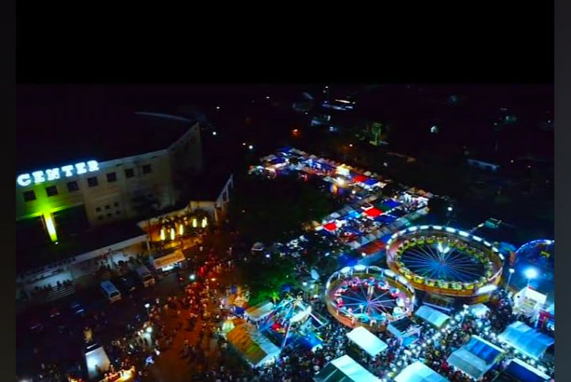
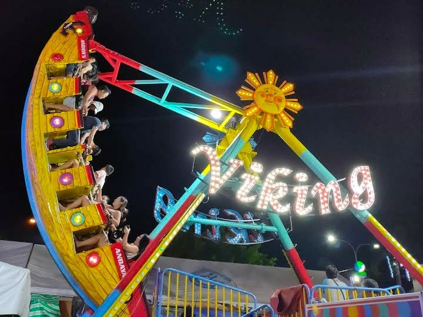